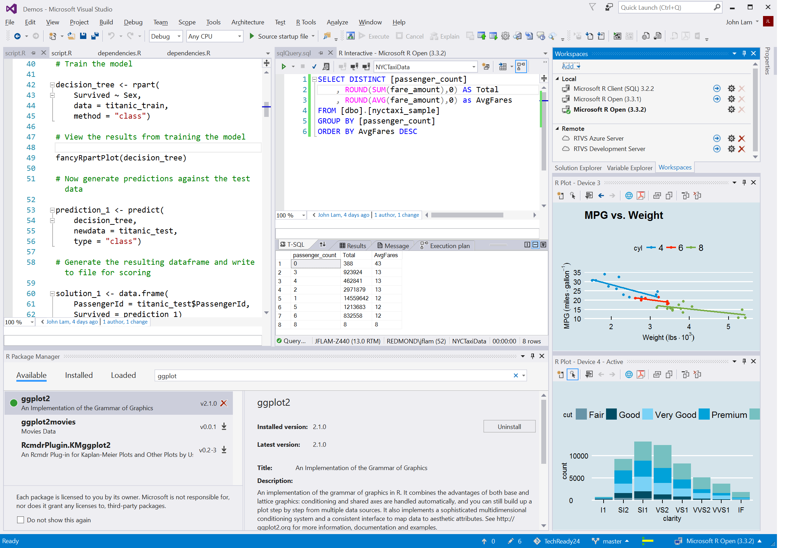

3 IDEの導入
本章の内容は今後、以下の資料に基づき、再作成する予定である。
- 矢内による資料 (macOS編、Linux (Ubuntu)編、Windows編)
3.1 IDE
プログラミングは基本的にコードを書く作業の連続だが、コードを書く他にも様々な作業を行うことになる。たとえば、自分が書いたコードの結果が正しく動作するかの確認作業や、なにか問題がある場合の対処（デバッグ）などがある。また、コードを書く際、誤字やミスなどがないかも確認する必要がある。他にもプログラムで使用されるファイルを管理しなければならない。これらの仕事を手助けしてくれるのが統合開発環境 (integrated development environment; IDE) と呼ばれるものである。
プログラマにとって優れたIDEを使うということは、優れた秘書を雇用するようなものだ。ファイルの管理、うろ覚えのコマンドの補完入力、コードの色分けなどを自動的に行ってくれる。さらに、コードの実行結果の画面をコードと同時に表示してくれたり、これまでの作業を記録してくれるなど、多くの作業を手助けしてくれる。Rにはいくつかの優れたIDEが用意されている。本書では代表的なIDEである RStudio を使うことにする。ただし、プログラミングにIDEは必須ではない。IDEをインストールしなくても、本書を読む上で特に問題はない（RStudioに関する説明の部分を除く）が、Rの実行環境に特にこだわりがないなら RStudioの導入を強く推奨する。
RStudio以外にもRのIDEはある。魔界において圧倒的なシェアを誇ると噂されるWindowsという名のOSを使用しているなら、R Tools for Visual Studio がRStudioの代替候補として有力だ。

自分が使い慣れたテキストエディタをIDEとして使うことも可能である。Sublime Text や Atom はむろん、伝統のある Emacs や Vim を使うこともできる。
3.2 RStudioのインストールと起動
3.2.1 macOSの場合
ポチポチ、ドラッグ・アンド・ドロップ
3.2.2 Linux (Ubuntu)の場合
ダウンロードしたバージョン (例えば、最新バージョン) が分かっていれば、ターミナルでwgetコマンドで直接ダウンロード
たとえば、~/Downloadsフォルダーに2020.02.0-443バージョンをダウンロードする場合は
$ cd ~/Downloads/
$ wget https://download1.rstudio.org/desktop/bionic/amd64/rstudio-2022.02.0-443-amd64.deb分からない場合は、RStudioのホームページの「All Installer」のリストから「Ubuntu 18+/Debian 10+」用の.debファイルをダウンロード
.debファイルのインストールは、ターミナルを使って~/Downloadフォルダー内のrstudio-2022.02.0-443-amd64.debファイルをインストールするなら…
$ cd ~/Downloads/
$ sudo gdebi rstudio-2022.02.0-443-amd64.debgdebiがインストール済みならnautilus (Linux MintならNemo?)で.debファイルをダブルクリックしてインストール可能
3.2.3 Windowsの場合
ポチポチ